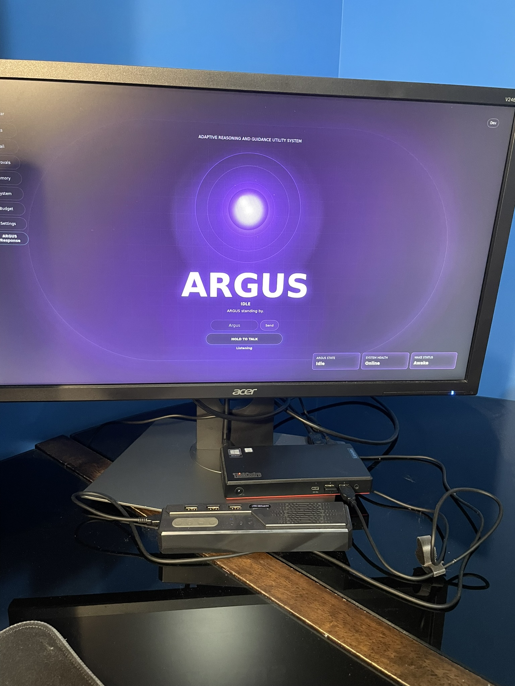
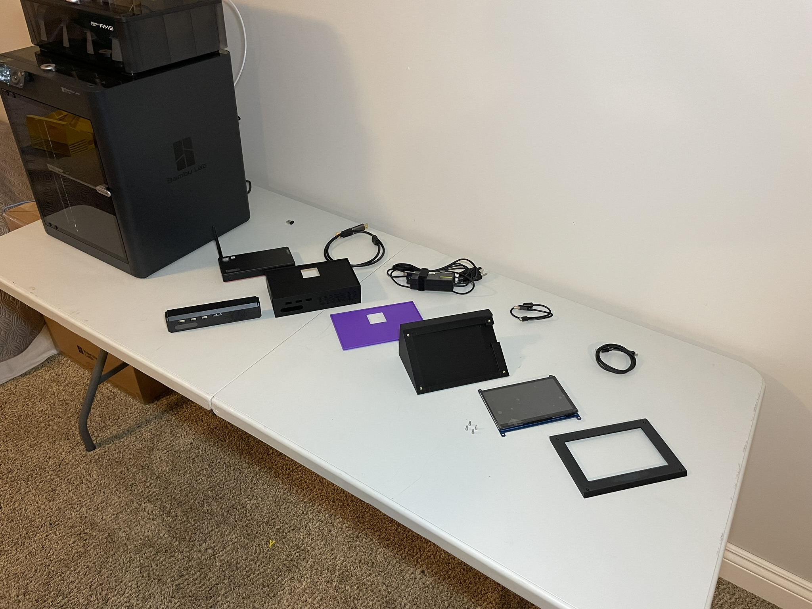
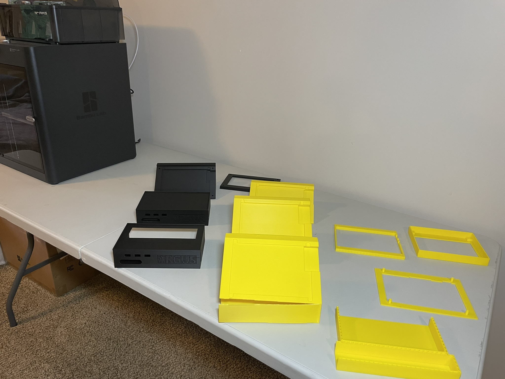
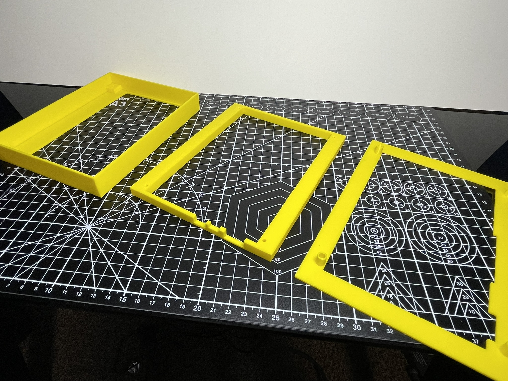

Adaptive Reasoning and Guidance Utility System — a physical, local-first AI assistant that runs local language-model reasoning, voice, and Google integrations inside custom-built hardware.
Fig. 01 — the assembled first-generation ARGUS unit.
Overview
ARGUS is a physical, local-first AI assistant that combines local language-model reasoning, voice interaction, Google service integrations, controlled automation, and a custom interface within a dedicated hardware system.
Unlike a chatbot accessed through a laptop or browser, ARGUS is a persistent physical product. A Lenovo ThinkCentre runs the FastAPI backend, local Ollama model, voice services, and dashboard, connected to a seven-inch touchscreen inside a custom 3D-printed enclosure I designed and manufactured.
The first physical assembly has been printed, assembled, and deployed. ARGUS captures speech, transcribes it with Faster-Whisper, reasons with a local Llama 3.2 model, and replies in speech via ElevenLabs — with Google Tasks, Calendar, and Gmail integrated behind controlled approval for consequential actions.
Highlights
A deployed, self-contained physical AI appliance — not a chat window on a laptop.
End-to-end local voice loop: microphone → Faster-Whisper → local Llama 3.2 → ElevenLabs.
Software, AI, interface, Linux deployment, and a custom 3D-printed enclosure designed as one system.

Fig. 02 — the ARGUS dashboard in its idle state.
At a glance
The current unit.
92automated tests passing
100%on-device model inference
7-inchtouchscreen · 1024 × 600
Gen 1unit printed, assembled & deployed
Purpose
Design principles.
ARGUS explores how an AI assistant can operate as a local physical system rather than only as a cloud-hosted chat interface. It is built around a few principles:
Local operation stays available without depending entirely on cloud services.
Language models are used for interpretation and open-ended reasoning.
External actions are gated behind explicit user approval.
Personal integrations and credentials stay separated from source code.
Software, interface, enclosure, and hardware are designed as one system.
Cloud services extend the system rather than becoming its only foundation.
System Architecture
Layered by concern.
Physical Interaction
Touchscreen, microphone, speaker, ThinkCentre, and custom enclosure — the user-facing interaction point that houses the local computing hardware.
Interface
A browser-based dashboard built for the 1024 × 600 display; the assistant's visual presence, talking to the FastAPI backend.
Application
The FastAPI backend coordinates interface requests, voice I/O, model communication, commands, and external-service integrations.
Voice
Microphone capture → Faster-Whisper transcription → request pipeline → ElevenLabs speech, played through the device.
Reasoning
Open-ended requests run on a local Llama 3.2 model via Ollama; structured behaviour is kept distinct from model reasoning.
Integration
Google Tasks, Calendar, and Gmail via OAuth, with credentials and tokens stored outside source control.
Deployment
systemd-managed backend and kiosk (Xorg, Openbox, Chromium); auto-starts at boot and waits for backend health.
Testing & Development
GitHub as the source of truth, automated tests (92 passing), and deployment / troubleshooting documentation.
Voice Interaction Workflow
From spoken word to spoken reply.
The user speaks to ARGUS through the physical microphone.
The system records the audio input.
Faster-Whisper converts the audio into text.
The backend receives and interprets the transcribed request.
The request is processed through structured application logic or the local language model.
Any required Google service or tool integration is invoked.
Consequential external actions are placed behind the appropriate approval behaviour.
ARGUS generates a final text response.
ElevenLabs converts the response into speech.
The audio response is played through the physical device.
Hardware
The physical system.
Lenovo ThinkCentre M90n-1 Nano running Ubuntu / Linux — the local compute for backend, model, voice, and interface.
Seven-inch Waveshare touchscreen at 1024 × 600, driven as a dedicated kiosk.
Microphone and speaker for a self-contained interaction point.
Custom 3D-printed enclosure housing the display, computer, and audio hardware.
Locally hosted Ollama language model (Llama 3.2).

Fig. 03 — system components before assembly.
Enclosure & Mechanical Design
Designed to be built, not just modelled.
I designed the ARGUS enclosure from concept sketches through CAD modelling, tolerance testing, and iterative 3D printing, then assembled the finished unit by hand. The design had to account for the screen, the ThinkCentre, cable routing, assembly access, and print orientation — not just the ideal CAD shape.
The original concept was a single solid body, which proved impractical to print as one component. I redesigned it as multiple parts that could be printed, assembled, and serviced more effectively — a change that introduced new constraints around connection methods, tolerances, surface finish, and support material. The final design reflects lessons learned from failed prints and physical assembly, not CAD alone.

Fig. 04 — enclosure iterations: final parts beside earlier prototypes.

Fig. 05 — screen-bezel prototypes across revisions.
Current Capabilities
What works today.
End-to-end voice conversations through the physical device.
Speech-to-text via Faster-Whisper; open-ended answers via a local Llama 3.2 model.
Spoken responses via ElevenLabs text-to-speech.
Google OAuth with Tasks, Calendar, and Gmail integration.
Approval-oriented handling of consequential external actions.
A dedicated FastAPI backend and a browser UI for the seven-inch display.
Local-network access from trusted devices.
Automatic backend and kiosk startup at boot, with a health-check endpoint.
92 automated tests passing.
Secure separation of credentials, OAuth tokens, and sensitive configuration.
Kept honest: persistent conversation and project memory is not yet verified, so it isn't treated as a confirmed capability; the interface's CPU, memory, temperature, and network areas are currently placeholders rather than live telemetry; and no cloud models are connected — open-ended reasoning runs entirely on the local Ollama model.
Key Engineering Challenges
The hard parts.
Local AI performance — balancing response quality, memory, and speed on the ThinkCentre's limited resources.
Voice-system integration — coordinating recording, transcription, reasoning, synthesis, and playback across services.
Physical kiosk deployment — Linux console permissions, Xorg startup, Chromium snap restrictions, and service ordering.
Hardware integration — designing the enclosure around screen, computer, cables, access, tolerances, and print limits.
Controlled external actions — separating conversational reasoning from actions that modify email, tasks, and calendars.
Scope management — keeping working features, experimental foundations, and future ideas clearly distinct.
My Contributions
What I did.
Defined the original ARGUS product concept and project direction.
Designed the overall hardware and software architecture.
Selected and configured the ThinkCentre platform and seven-inch display.
Designed and developed the FastAPI backend and device dashboard.
Integrated the local Ollama model and Llama 3.2 request processing.
Integrated microphone input, Faster-Whisper transcription, and ElevenLabs speech.
Integrated Google Tasks, Calendar, and Gmail with OAuth and secure token handling.
Designed approval-oriented behaviour for consequential external actions.
Configured Linux services and the kiosk environment with automatic startup.
Diagnosed Xorg, Chromium, display, power, and local-network issues.
Created and executed automated tests (92 passing) and maintained Git / GitHub workflows.
Produced deployment, development, and troubleshooting documentation.
Designed the enclosure entirely in CAD and manufactured it through iterative 3D printing.
Assembled and integrated the final physical system.
Documented the finished device and its development with photos and video.
Key Engineering Lessons
What I'd carry forward.
ARGUS reinforced that building a physical AI product is a system-engineering problem, not a collection of isolated software features.
On the software and deployment side, I learned to separate deterministic behaviour from language-model reasoning, isolate optional integrations behind approval controls, and lean on testing and documentation to keep a growing AI system understandable — while configuring Linux services, a kiosk environment, local networking, and automatic startup for a dedicated device.
On the mechanical side, I learned that a design that looks correct in CAD can still be hard to manufacture, assemble, or maintain — print orientation, connection methods, real-world tolerances, and cable access have to shape the design from the start. The most important lesson: the software, AI, interface, deployment, electronics, and enclosure have to be designed as one integrated product.
The ARGUS source repository is private and may remain so — as a potentially commercial product, this page documents the engineering and the finished system rather than publishing the code.